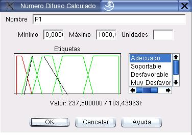

Presentación de Variables Lingüísticas
Para desplegar la información de una variable lingüística sin que ésta se pueda editar, el programa emplea el cuadro de diálogo que muestra la figura 6.7
Los principales componentes de este cuadro de diálogo se explican a continuación:
- Nombre:
- En este campo se muestra el nombre de la variable.
- Mínimo/Máximo:
- En estos campos se muestran los valores mínimo y máximo que puede tomar la variable.
- Unidades:
- Este campo muestra las unidades de la variable.
- Etiquetas:
- La variable lingüística tiene un conjunto de etiquetas asociadas a ella. Cada una de ellas, a su vez, tiene un conjunto difuso asociado. En el cuadro de diálogo se dibujan los conjuntos difusos, y se listan las etiquetas. Si se selecciona una etiqueta de la lista, su conjunto difuso asociado se pinta en color rojo. En negro se muestra el valor que toma la variable.
- Valor:
- Muestra el valor representativo y la ambigüedad del valor que toma la variable separados por el caracter /.
Figura 6.7:
Diálogo para mostrar números difusos
|

|
Oscar Duarte
2005-05-01